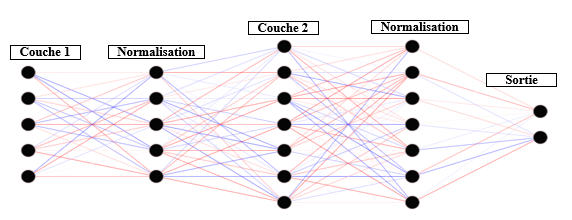

La normalisation par lots#
Dans cet article, je vais vous parler d’une technique efficace pour améliorer vos modèles de deep learning et les rendre plus puissants: la normalisation par lots ou en anglais batch normalization. Nous allons suivre la chronologie suivant les grands points qui sont:
La normalisation par lots C’est quoi ? Quels sont les avantages ? Comment ça fonctionne ? Exemple avec Pytorch Références
C’est quoi ?#
La normalisation par lots est une technique d’apprentissage supervisé qui faire la conversion des sorties inter couches d’un réseau de neurones dans un autre espace de données. Selon les auteurs qui ont proposés cette méthode, la formation des réseaux de neurones profonds est compliquée par le fait que la distribution des entrées de chaque couche change au cours de la formation au fur et à mesure que les paramètres des couches précédentes changent. Ainsi cela ralentit la formation en nécessitant un faible taux apprentissage (learning rate) et une initialisation minutieuse des paramètres, et le rend notoirement difficile d’entraîner des modèles avec des non-linéarités saturantes. Sa fonction est de réinitialiser ou régulariser (pour ne pas réutiliser le terme normaliser) efficacement la distribution de la sortie de la couche précédente afin qu’elle soit traitée plus efficacement par la couche suivante.
Quels sont les avantages ?#
Cette nouvelle solution qu’est la normalisation par lots va permettre :
D’accélérer le processus de formation: puisque la normalisation garantit qu’il n’y a pas de valeur d’activation trop élevée ou trop faible, tout en permettant à chaque couche d’apprendre indépendamment des autres.
De réduire les pertes de données inter couches, ce qui améliore considérablement la précision sur l’ensemble du réseau.
De diminuer l’importance des poids initiaux: la normalisation par lots nous permet d’utiliser des taux d’apprentissage beaucoup plus élevés et faire moins attention à l’initialisation.
Puis de régulariser le modèle
Exemple avec Pytorch#
Pour utiliser la normalisation par lots, nous faisons un appel après chaque couche, et en fonction de la sortie de la couche précédente. Dans cet exemple, nous utilisons cette technique pour entrainer un réseau de reconnaissance d’image.
class Net(nn.Module):
def __init__(self):
super(Net, self).__init__()
self.conv1 = nn.Conv2d(in_channels=1, out_channels=32, kernel_size=3, stride=1)
self.bn1 = nn.BatchNorm2d(32)
self.conv2 = nn.Conv2d(32, 64, 3, 1)
self.bn2 = nn.BatchNorm2d(64) # Première normalisation
self.dropout1 = nn.Dropout(0.25)
self.fc1 = nn.Linear(9216, 128)
self.fc1_bn = nn.BatchNorm1d(128) # Seconde normalisation
self.fc_2 = nn.Linear(128, 10)
def forward(self, x):
x = self.conv1(x)
x = F.relu(self.bn1(x))
x = self.conv2(x)
x = F.relu(self.bn2(x))
x = F.max_pool2d(x, 2)
x = self.dropout1(x)
x = torch.flatten(x, 1)
x = self.fc1(x)
x = F.relu(self.fc1_bn(x))
x = self.fc_2(x)
output = F.log_softmax(x, dim=1)
return output
Références#
Sergey Ioffe, et al., Batch Normalization: Accelerating Deep Network Training by Reducing Internal Covariate Shift
https://deepai.org/machine-learning-glossary-and-terms/batch-normalization
Thankss ! ☕
Comment ça fonctionne ?#
Améliorer la stabilité d’un réseau tel est le leitmotiv de la normalisation par lots.

À la sortie d’une couche, les données \( x_i \) sont mises à l’échelle en suivant la formule suivante :
Avec \( \mu \) la moyenne des données et \( \sigma \) l’écart-type de la distribution.
La normalisation par lots fonctionne avec les descentes de gradient afin que l’opération inverse (retour aux valeurs initiales avant la normalisation) soit possible. Cela conduit à moins de pertes de données et à une stabilité accrue sur le réseau en modifiant tous les autres poids pertinents.